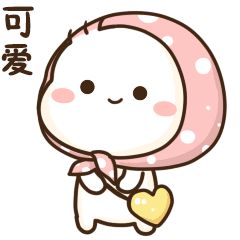
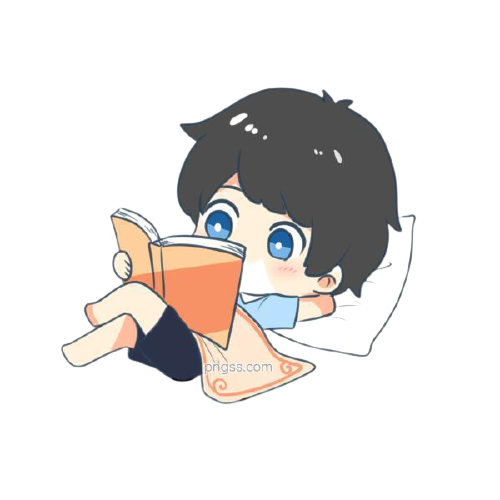
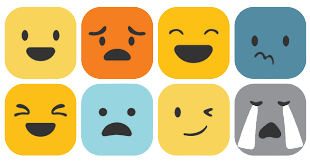

讀書是在別人思想的幫助下，建立起自己的思想。
| 欲閱讀的書籍名稱 |
作者 |
閱讀完畢？ |
| 原子習慣 |
James Clear |
NO |
| 高敏感是一種天賦 |
Ilse Sand |
YES |
| 女孩心翻譯蒟蒻 |
黑川伊保子 |
YES |
| 遠離!傷人傷己的情緒風暴 |
水島廣子 |
YES |
| 非暴力溝通~愛的語言 |
Marshall B. Rosenberg, ph.D |
YES |
| 因為這是你的人生~蔡康永的情商課 |
蔡康永 |
YES |
| 你不必討好這個世界，只需要做更好的自己 |
采薇 |
YES |
| 做人不要「過度」，待人才會有「溫度」 |
馮子雲 |
YES |
| 存股輕鬆學 |
孫悟天 |
YES |
| 愛了然後呢 |
黃小柔 |
YES |



書籍名稱：高敏感是一種天賦
內容金句：
．人們經常會忽略一個事實—在安定環境中，高敏感族較一般人更容易感覺到幸福。
．兒時容易因外在變化而出現劇烈反應的人，長大後反而對人生有更深的思考。
．除了比一班人需要更多時間思考外,高敏感族也容易因為傷害別人而懊悔不已。
．人類很容易把自己置入某個特定類型。
掙脫該類型的束縛,才有機會再成長。
．自信--信任自己的能力與行動
自尊心--能感覺到自己內在潛藏的本質,相信自我價值的心。
．不要強迫自己一定要「好」,就算顯露出不完美,也會有人喜歡你。
．面對生命的無常與自己的無力感，過度受到罪惡感的苛責是沒有必要的。
書籍名稱：遠離! 傷人傷己的情緒風暴
內容金句：
※我們不能改變對方,但能解放自己的心。
※「悲傷歷程」並不是忘記對方的過程,而是「重新建構與對方的關係」的過程。
※坦承溝通，感情才會真正變好。
※肯定自己的情緒,不等於要將情緒化為行動。
※用肯定與陪伴，給予對方所需的溫暖。
※調整內心對現實的期待，有效打破憤怒帶來的困境。
※懂得同理他人，也要學會同理自己。
※過激的情緒反應，往往來自過去的創傷經驗。
※「凡事做到十全十美」真的有必要嗎？不妨換個角度思考一下。
※焦慮的人最需要的，往往僅是單純的肯定與接納。
※把注意力放在當下,過去的烏雲就無法影響你。
※一昧追求外在的連結，無法消除寂寞。
※因為不想被罵而編了一套說詞,這叫「撒謊」,顧及對方,不想傷害對方而編了一套說詞,這叫「權宜」。
※當你知道什麼樣的期待對於對方而言是合乎現實的,你才算真正懂得對方,才能拉近與對方的距離。
書籍名稱：因為這是你的人生~蔡康永的情商課
內容金句：
◎美好的人際關係裡面,一定充滿了讓步妥協,互相遷就。
◎我們每個人享受的成果中,一定有不少是別人給我們的,我們因此而產生的歉疚,要量力而為的表達,而不是迴避,更不要因為罪惡感,就放棄去追求更大的夢想。
◎貼心往往不是抱緊緊,而是為你關心的人,留下足夠的空間。
◎減少壓力唯一的方法，就是放手⋯放掉「事情非如此不可」的想法，你會發現現在可以放手的事很多，但最後會留下無論如何都放不掉的事，那些放不掉的事，就是你活下去的理由。
◎假設在人際關係裡，你的付出常常換不來你所期待的回報，你可以往上游眺望一眼，看看你的付出，是基於你自己的需求，還是你所判斷的對方的需求？
◎如果一個人潛藏自己為什麼做這個選擇，別人的意見就沒那麼重要。
◎自知之明，知道自己的脆弱，才會知道怎麼把力氣花在刀口上、把自己裝備到堅強。
◎死亡會逼著我們反省：之前一切的執著，有沒有必要這麼放不下？死亡會逼迫我們在想起一個人的時候，不只想到對方的可惡也想到對方的可愛或可憐。
◎選擇朋友如同我們選擇感興趣的書一樣，我們不再是被灌輸價值觀，而是邀請對方，來參與我們這一輩子對自身價值觀的塑造。
◎你不知道朋友的啟發，能把你帶到多遠，就像我每翻開一本我很期待的書，我也不知道這本書能夠帶我到多遠。但起碼，我們都不再只是停留在原地發呆而已
◎不要讓你生命中的人白來一場，讓他們帶你去你原本不知道的遠方，讓他們陪伴你成為比你原本想像中更好的自己。